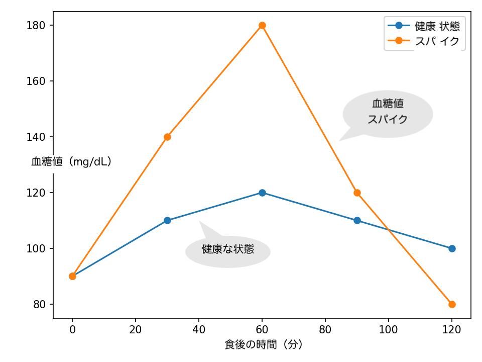
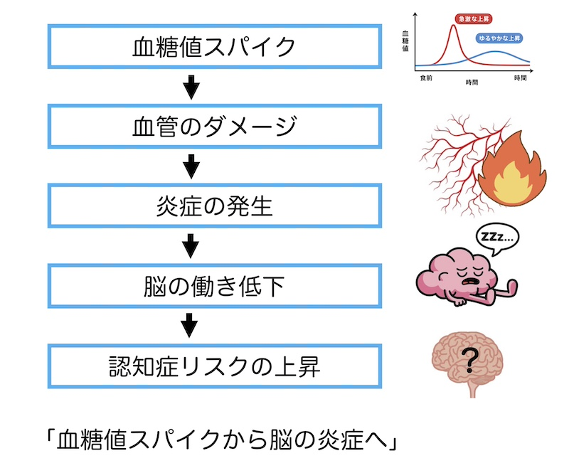
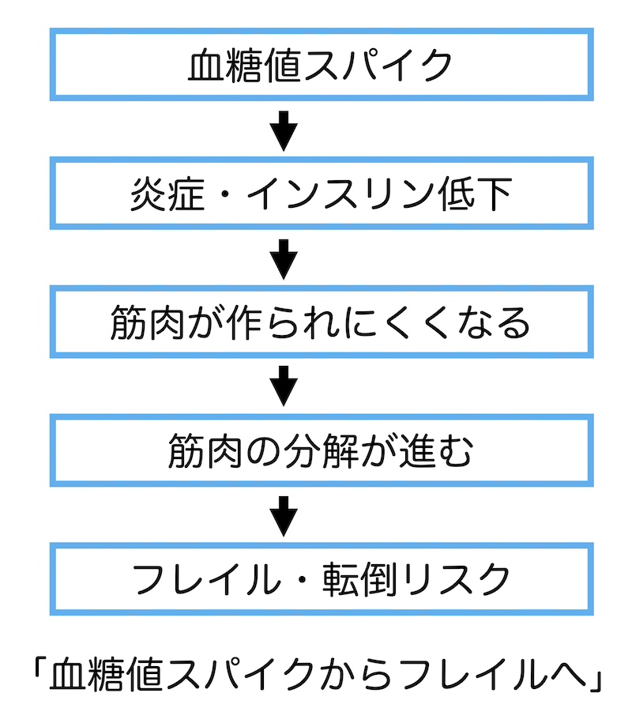
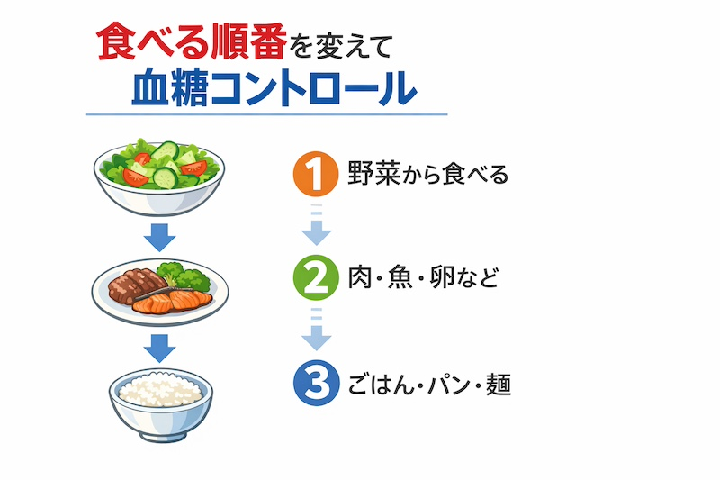

公開日：2026年4月｜最終更新：2026年7月
第１章 血糖値スパイクはなぜ起こるのか
「血糖値スパイク」とは、食後に血糖値が急上昇、急降下する状態のことです。
健康診断では見つからないことも多く、見た目は元気でも体の中では、いわゆる炎症が進行しているのです。その結果、認知症やフレイルへと進むことが心配されます。
血糖値スパイクは、糖尿病の患者さんはもちろん、糖尿病予備軍でも起こるのです。

主な3つの原因
(1) インスリンの働きが弱くなる
(2) インスリンの分泌が遅れる
(3) 食事内容や速度の問題
コラム：糖尿病との関係
「血糖値スパイク＝必ずしも糖尿病ではない」、糖尿病予備群でも起こり、生活習慣が大きく関係します。
コラム：痩せていても安心ではない（重要：高齢者の特徴）
高齢者では。筋肉量低下や活動量低下により「隠れ血糖病」が起こることがあります。
まとめの表
| 特徴 |
正常 |
血糖値スパイク |
| 食後 |
緩やかに上昇・下降 |
急激に上昇・急降下 |
| インスリン |
速やかに分泌 |
分泌遅延・作用低下 |
| 自覚症状 |
ほぼなし |
気づきにくい |
| 健康診断 |
空腹時正常 |
空腹時正常なこと多い |
第２章 血糖値スパイクと認知症
血糖の乱高下は「血管へのダメージ」を起こします。これにより、脳の細い血管が痛み、脳の慢性炎症が起き、記憶力・判断力が低下します。
血管がダメージを受けるメカニズム（専門的です）
血糖値が高い状態では、血液中の
「糖」が、たんぱく質や脂質にくっつき、
「糖化」が進みます。その結果、
「終末糖化産物（AGE）」ができます。
AGEは一度できると分解されにくく、長く体内に残るようです。
血糖値スパイクがAGEを増やす理由として、急な高血糖のピークでは、糖とタンパク質が反応しやすく、AGEが多くつくられ、スパイクを繰り返すとほど、AGEの蓄積が加速すると考えられています。
血管の壁には、
「コラーゲン」というたんぱく質が多く含まれており、AGEはこのコラーゲン同士を固く「架橋」してしまし、弾力を失わせ、硬くて割れやすい状態にするようです。
「その結果』
- 血管がゴムのようなしなやかな伸び縮みができなくなる
- 血圧の変化に対して弱くなり、細かい傷がつきやすくなる
- 傷に脂質など入り込み、動脈硬化の土台を作る
その結果、
「認知症の症状」や
「脳梗塞や脳出血」につながります。
それ以外にも、インスリンを分泌する
膵臓に悪影響を及ぼし、インスリンの分泌能力の低下に繋がります。
コラム：糖尿病でなくても安心ではない
「血管の内側が傷つく」「炎症が起こる」「脳細胞がダメージを受ける」

第３章 血糖値スパイクとフレイル
血糖急上昇により「活性酸素が増える」「慢性炎症が起こる」と、
「筋肉の合成が低下」「筋肉の分解が増加」します。
結果として「筋肉が減りやすくなります」、フレイルへと進行します。
血糖値スパイクが続くと、インスリン抵抗性が起こり、筋肉合成が低下します。
血糖急降下時には、エネルギー不足の状態になるため、「糖新生」が起こり、筋肉が分解されます。その結果、サルコペニア、フレイルへと進行すると考えられます。
筋肉が減る3つの理由
- 炎症
- インスリン抵抗性（下のコラム参照）
- エネルギー不足
まとめ：血糖値の安定 ＝ 脳と筋肉を守る
コラム：インスリン抵抗性と筋肉量の低下の関係
「インスリン」は、血糖を下げるだけではなく、筋肉にとっては「栄養を取り込ませて合成を促すホルモン」です。
インスリン抵抗性（インスリンが効かない）になると、骨格筋がインスリンと反応しにくくなるため、糖やアミノ酸も取り込まれにくくなります。
その結果、
- 筋肉に栄養が入りにくくなり、たんぱく質合成が落ちて筋肉量が減る
- 筋肉量が減ると、インスリンが効きやすい組織が減るので、さらにインスリン抵抗性が悪化する
という悪循環が起こります。

第４章 具体的な予防策

- 「野菜から食べる」野菜、たんぱく質、ご飯の順で！
- 「炭水化物だけの食事を避ける」必ずたんぱく質を一緒に！
- 「よく噛み、20分以上かける」「早食い」を避けよう！
- 「1日3食」朝食を抜かない！
- 「甘い飲み物を控える」砂糖を控えめに！
- 「食後に少し歩く」筋肉は血糖の貯蔵庫です！
コメント：高齢者向け大切な３か条
「野菜から食べる」「炭水化物だけの食事をしない」「食後に少し歩く」、です。
第５章 まとめ
血糖値スパイクは静かに脳と筋肉を弱らせます。
「血糖値スパイクは、特別な薬がなくても、食べ方や生活習慣で防ぐことができます。」
「野菜から食べる」「炭水化物だけを避ける」「食後に体を動かす」、この３つを心がけるだけで、認知症とフレイルの予防になります。
参考文献
Ceriello A. Postprandial hyperglycemia and cardiovascular complications of diabetes: an update. Nutr Metab Cardiovasc Dis. 2010;20:613–620.
Morley JE. Diabetes, sarcopenia, and frailty. Clin Geriatr Med. 2008;24:455–469.